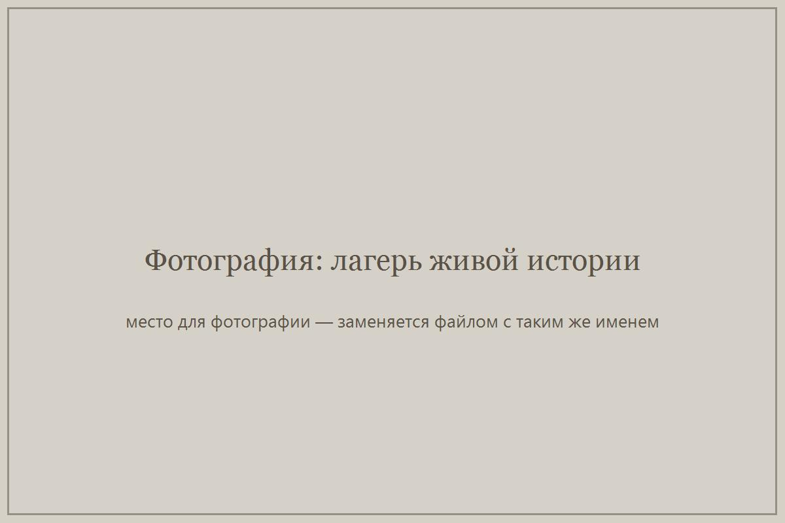
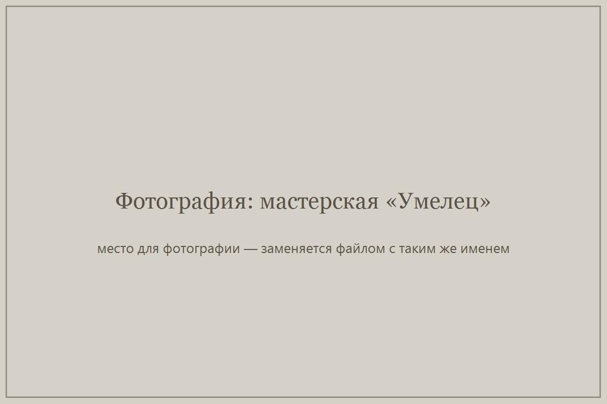

Фестиваль живой истории
Ежегодный фестиваль «Щит Сибири» в Омске: музей живой истории под открытым небом, турнир по историческому фехтованию, ремесленные площадки, лагерь исторической реконструкции. В 2026 году фестиваль прошёл в 21-й раз.
Омская региональная общественная организация «Центр поддержки общественных инициатив „Ясень“» с 2005 года проводит в Омске фестиваль исторической реконструкции «Щит Сибири. Диалог с прошлым». Мы показываем историю не по учебнику, а руками: ремесленные мастерские, лагерь живой истории, исторический квест, уроки живой истории в школах.
Ежегодный фестиваль «Щит Сибири» в Омске: музей живой истории под открытым небом, турнир по историческому фехтованию, ремесленные площадки, лагерь исторической реконструкции. В 2026 году фестиваль прошёл в 21-й раз.
«Ткань времени», «Прошлое говорит», «Сквозь века. Сибирь» — игровые маршруты по историческим эпохам для школьников и семей. Мероприятия проходили в Омской, Свердловской и Челябинской областях.
Занятия для школьников, на которых история показана через подлинные и воссозданные предметы, ремёсла и работу реконструкторов. Проходят в школах и на площадках партнёров.
Историческая ремесленная мастерская «Умелец» (гончарное и столярное дело) и молодёжный клуб исторической реконструкции «Школа юного реконструктора» — занятия в мини-группах, от первого изделия до участия в фестивалях.
Фестиваль в Омске, неделя стационарной работы площадки «Лагерь живой истории», интерактивный лекторий и исторический квест для молодёжи 14–25 лет. Подробнее о проекте.
Молодёжный клуб исторической реконструкции из старшеклассников Омска: полугодовая программа занятий по эпохе IX–XI веков, финальный квест «Ткань времени» и уроки живой истории для сверстников.
Три квеста в трёх регионах — Омской, Свердловской и Челябинской областях: более 14 000 гостей и около 2 000 участников квеста.

